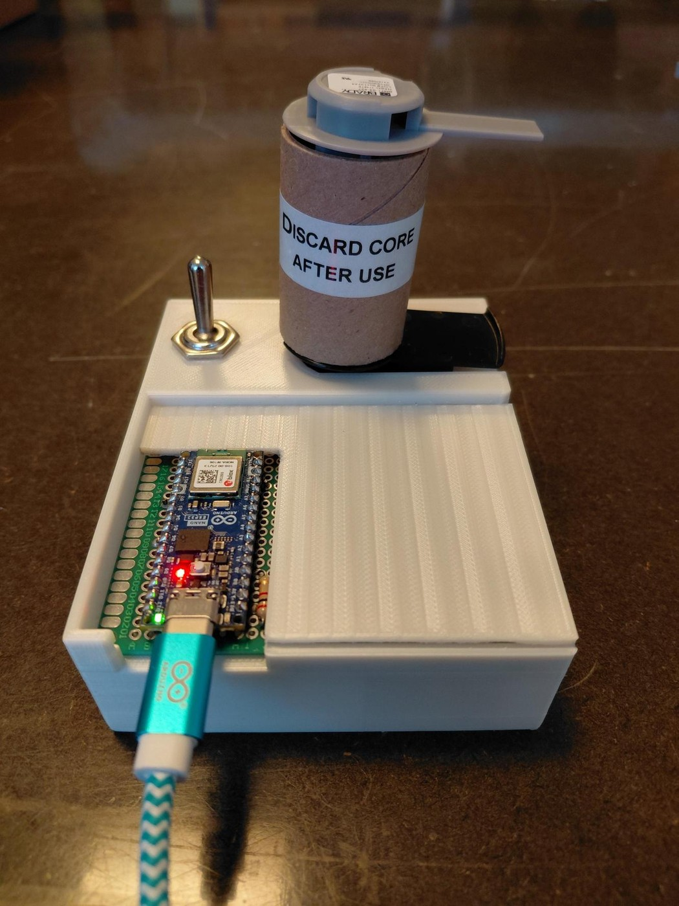
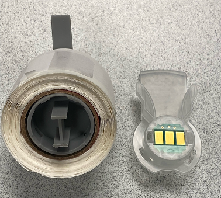

Brady Roll Refill Box
Brady label rolls could stop being accepted while usable material remained. I investigated the Smart Cell attached to the roll, identified how the remaining material was stored and built a standalone tool that can validate and restore supported rolls.
← Back to projects
Background
Around 10% of the label material could still remain when the printer stopped accepting a roll. I wanted to determine whether the limit came from the physical roll or from the data stored in the attached Smart Cell.
Each roll contains a small memory device that identifies the media and tracks how much material remains. This became the starting point for the investigation.
Smart Cell and test setup
I opened the Smart Cell and identified the memory device as a DS2431 EEPROM. The datasheet provided the 1-Wire communication method and the basic memory structure.
I then built a two-contact fixture connected to an Arduino. This allowed rolls to be inserted, read and compared repeatedly without soldering.

Identifying the counter
Rather than guessing which bytes represented the remaining material, I used a controlled comparison. I read the complete EEPROM, printed exactly one label and then read the memory again.
Repeating the comparison showed which bytes changed with use and led to the remaining-material counter and its associated checksum.
Memory structure
The Smart Cell contains more than a counter. It also stores the part number, nominal capacity, format information, integrity checks and the protection state of each memory page.
In the example shown here, the roll reports a nominal capacity of 2500 and a remaining count of 797. The dynamic counter is stored together with a checksum that must remain valid after an update.
NEW ROLL DETECTED
Device type: DS2431
ROM CRC: OK
Brady BRC format: OK
Part number: BM-094-1-342-YL
Static CRC: OK
Capacity address: 0x4D
Nominal / full capacity: 2500
Labels remaining: 797
Counter row 0x78-0x7F:
1D 03 00 00 00 00 00 20
Counter checksum stored: 0x20
Counter checksum calc: 0x20
Counter checksum: OK
Page 3: OPEN / WRITABLEWrite procedure and validation
The tool does not write to every DS2431 it detects. Before a refill is allowed, the firmware verifies the expected Brady BRC format, checks the stored CRC and checksum values, and confirms that the dynamic page is still writable. Unknown layouts and failed checks remain read-only.
A refill changes only the dynamic remaining-material data. The checksum is recalculated, reserved bytes are preserved and the EEPROM is read back after the write to verify the result. The static media definition and the DS2431 protection registers are left unchanged.
Workshop tool
Once the memory handling worked reliably, I packaged the electronics into a CAD-designed and 3D-printed enclosure with a reusable contact fixture, status indication and a physical write switch.
The operator inserts a roll and the tool automatically identifies the Smart Cell, validates the memory and indicates whether the roll is supported, locked or ready for refill. No data is changed until the physical switch is activated.
Result
The finished tool can identify supported Brady rolls, validate their memory structure and restore the remaining-material counter without modifying the static media data. It is now used in the workshop to recover material that would otherwise be discarded.